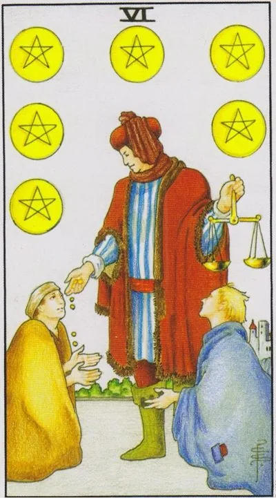

Minor Arcana · Pentacles
VISix of Pentacles
The flow of generosity: resources circulate again, the scales in the hand of the giver keep the balance between generosity and justice.
Archetype and core meaning
A wealthy citizen in a crimson cloak hands out coins to two beggars, and holds a scale in his left hand. He is not only kind, he is accurate: to each as needed, without ruining himself or humiliating those who ask. The six pentacles are a card of the correct circulation of abundance: what is received from above flows down and comes back again while the scale is held.
The card asks each side an uncomfortable question: What role are you in now? Acceptance is a skill no less than giving: it requires recognizing vulnerability and not paying with gratitude for your own will. And the scale giver is reminded that help without measure becomes a leash. True generosity levelles the world; the false one only paints the hierarchy in the colors of charity.
Daily life
Everyday life is decorated with the exchange of good things: you support relatives with money or work, you donate to the right thing, you share food and time — or you are on the receiving side, and it happens carefully. It's a good day to pay back an old debt, to thank the helper, to leave a generous tip: what is given today returns quickly.
Work and career
The business climate is warm: bosses give bonuses, coworkers share their expertise, you become a mentor to the newcomer, you can have a lucrative barter, a favor for a favor on fair terms. If you're a leader, six advise fair distribution of bonuses: generosity to those close to you, blind to others, rocks the scales of the department.
Relationships
There's a sharing of care in a couple: one is cooking dinner, the other is treating the flu, both feel balanced. A beautiful period for gifts, surprises, support in a difficult episode. Card check is tone: help of the equal or patronage from above? Love with one-way traffic quickly turns into charity, and it usually doesn't grow to be a wedding.
Health
Careful hands help recovery: loved ones care, the doctor is attentive, treatment is available. If you are in power, share it — caring for a weakening relative or volunteering heals the helper. The body now responds well to nutrition and regimen: banal warmth, sleep and full food work as a medicine.
Spiritual meaning
The moon in Taurus nourishes the world through matter: tradition connects this card with the law of tithes, the separated part sanctifies the whole. The scale in the hand of the merchant is an ancient symbol of karmic balance: every coin passed through the hands is written into both the giver and the taker. The practice of the card is the blessing of the money you give away: ordinary payment becomes the magic of exchange.
The scales swung: the help revealed threads, debts are not returned, and in each gift a hook is seen.
Archetype and core meaning
The scales fell out of the hand of the giver: coins are handed out according to mood, and position dictates the price of good. The inverted six is a distorted cycle: help has become an instrument of power, gratitude has become a currency asking for eternal guilt. The classic faces of the card are a philanthropist demanding servility, a lender collecting not money but dependence, charity for a showcase.
There is a mirror side to the upheaval: the one who takes too long, the person is used to living at the expense of others, and no longer distinguishes between support and feeding; or vice versa, he is ashamed to accept the necessary and loses strength. The card requires to restore the degree: every exchange must have a fair price known to both, where the price is silent, bondage grows.
Daily life
Domestic injustice is coming from all over the place: relatives ask for money that will never come back; discounts overstate the sum; service obligates gratitude for the rest of your life; stop being upright — the word "no" is an act of hygiene today; and vice versa: if you have to, give back at least a part without waiting for reminders.
Work and career
At work, there are reward skews: equal effort is paid unequally, bonuses are paid to the people close to you, your work is dissolved in the wording of "general workload." There is a boss who buys loyalty with kindness. Record achievements in writing and check with the market: silent patience is never valued by such systems.
Relationships
The relationship has been skewed: one is invested in money, time, emotion, another accepts it as the world's order, love is increasingly like a content with terms, "I'm for you, you owe me," and gifts are accompanied by scores of expectations, the card is harsh: either the level of exchange is leveled off or the union is recognized as what it became - a deal.
Health
Body care has become hostage: treatment is available, but through borrowed money and other people's favor, and every treatment is worth self-respect, or vice versa, you're so used to being patient that you've launched something that's solvable. Take direct responsibility for your health: it shouldn't be the subject of someone else's charity.
Spiritual meaning
In the subtler sense, the card shows the nodes of incomplete exchanges: past debts hanging on the canals, and gifts that bind the giver tightly to the recipient. The practice of purification is the completion of hangings: return, forgive the debt in writing, refuse the service with a hook. The old teachers warned: the taker pledges the will — check whose scales you hold.
🌿 How the school reads this rank
The main idea
The ability to share resources. People are not afraid to run out of money, and they can afford to help.
How it manifests
In finance, charity, philanthropy and reasonable generosity; in relationships, sharing time, strength, body, experience and resources; it's better to give a man a fishing rod than to carry him a fish endlessly.
The shadow side
The recipient gets used to the help and begins to perceive it as the responsibility of the other.
Keywords
generosity · patronage · resource · help · balance
📜 In detail — from the rank lecture
Essence of the card
A rich merchant with scales shares with a beggar - "helping other people without a goal to earn"; a person "outgrown the top five", knows how he will earn again, so he is not afraid to spend.
Upright position
- Social/work: patronage – “give money when you just want to help” (he refers to sponsorship with risk as one of the five); borrowing a laptop is better than giving a change – “a person will earn more.”
- Finance: “I am happy to share, borrow without any interest, give a cup of coffee to a forgotten wallet”; scales are a symbol of justice: wisely calculate spending – “you will give everything to the poor, you will remain poor”; the rule “give a fishing rod, not a fish”; large sums to the needy cannot be “will start drinking”.
- Relationships: sharing a resource — body, time, strength, experience (“pentacles are time too”); a man gives a gift and changes the wheel “not because he wants something in return, but just because he does”; playful “pity sex” — a property of upside down; inverted — addiction: “you helped yesterday, and today why not?” — sits on his neck.
- Self-development: Generosity is a sign of the fear of poverty of the five; help gives meaning back to money.
Negative meaning
• help “works in the negative” – you discourage the recipient or sacrifice yourself: “serious old women give a pension for cat food and themselves are malnourished”; “such help is very easy to harm a person.”
School emphases and distinctive points
- “Wait did not draw much for nothing”: the scales of the merchant refer to Justice and “a balanced decision”.
- The animals in the cards are “our animal aspirations”; the color of the horse encodes the motif (white is the light side, black is the selfish side).
- Color code: red - matter ("red rose - emblem of the material world", wine - blood of Christ), white - spirit ("water from the wound of Christ" with a spear of fate); white flowers - unselfishness.
- Slavic series: sayings, compassionate grandmothers, “plombir 20 kopecks”; Soviet cartoons – an uncle from the factory of gutalin (“sends someone without getting hit”) and a cartoon about a bouquet (“for what?” – “just so!”).
- Modern images: Google (“he can’t Google”), Facebook, slipping friends, comments “School of Modern Tarot, you are the best tarologist” as an illustration of an inverted six wands.
- Techniques: argue with the classic correctly ("I do not use the author of the book, give my vision"); anti-detailing - "simplify... details can distort the general meaning"; "history is an example, not an instruction"; chess pattern and the baton of the triumphant without leaves - only hypotheses.
Keywords
“Share a resource”, patronage without benefit, “give a fishing rod, not a fish”, balanced generosity.